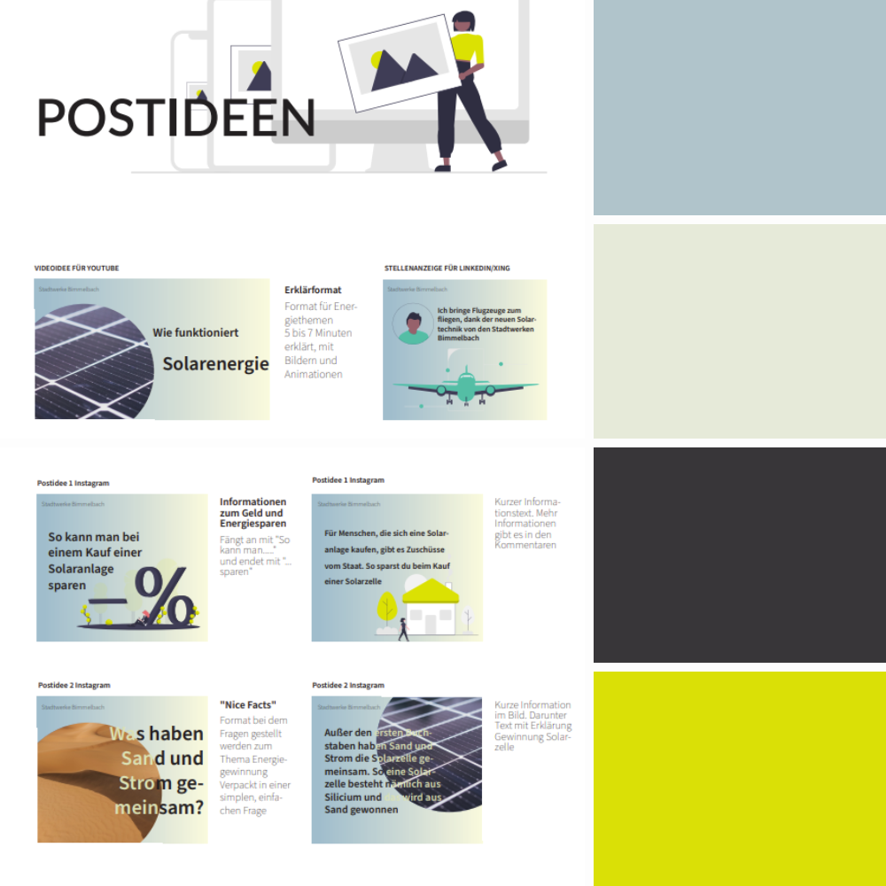
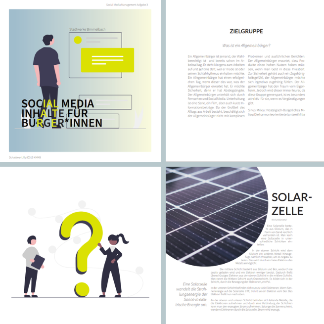
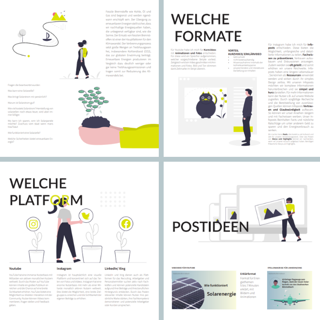

Solarstrom erklären
Ein Social-Media-Konzept für ein kommunales Energieunternehmen – von der Zielgruppe bis zum fertig gestalteten Post.
- Kontext
- Studienprojekt, Kurs Social Media Management
- Rolle
- Recherche, Konzept, Editorial Design
- Werkzeuge
- Illustrator, InDesign, Notion

Ausgangslage
Ein kommunales Energieunternehmen will Bürgerinnen und Bürger für Solarstrom gewinnen. Das ist kein Werbeproblem, sondern ein Erklärproblem: Eine Solaranlage ist eine große Anschaffung, über die man wenig weiß. Wer nicht versteht, wie die Technik funktioniert, was sie kostet und was sie bringt, entscheidet sich im Zweifel gar nicht.
Meine Aufgabe
Ein vollständiges Social-Media-Konzept: Wen sprechen wir an, auf welchen Plattformen, in welchen Formaten und wie sehen die Beiträge konkret aus. Als Einzelarbeit, von der Recherche bis zum gesetzten Dokument.
Vorgehen
Erst die Zielgruppe schärfen, dann alles daraus ableiten. Ich habe mit den Sinus-Milieus gearbeitet und die Zielgruppe in der harmonieorientierten Mitte verortet: sicherheitsbedacht, preisbewusst, informiert sich über Fernsehen und Social Media, nicht über Fachtexte.
Die Fragen sammeln, bevor ich Antworten gestalte. Statt mit Botschaften zu beginnen, habe ich aufgeschrieben, was diese Zielgruppe tatsächlich fragt: Was ist eine Solarzelle? Wie viel kostet sie? Was bringt sie mir? Wie sicher ist das? Jedes Format im Konzept beantwortet danach genau eine dieser Fragen.
Drei Plattformen, drei Rollen. YouTube für Erklärvideos, Instagram für kurze Infoposts und Reichweite, LinkedIn und Xing für Fachlichkeit und Personalgewinnung.
Umsetzung
Das Konzept ist selbst ein gestaltetes Dokument: zweispaltiger Satz, ein durchgehendes gelb-grünes Farbsystem, Illustrationen als wiederkehrendes Bildmittel.

